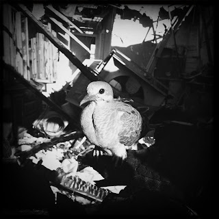

Recovered weblog entry
Bird in a burned-out house

A benefit of having a bike is that you see things you might have missed had you been driving. I found this while riding along Main tonight and trespassed accordingly. I don't necessarily want to know why the bird stayed so still for this picture. Turned out well, though. Lens: Tejas
Film: BlacKeys SuperGrain